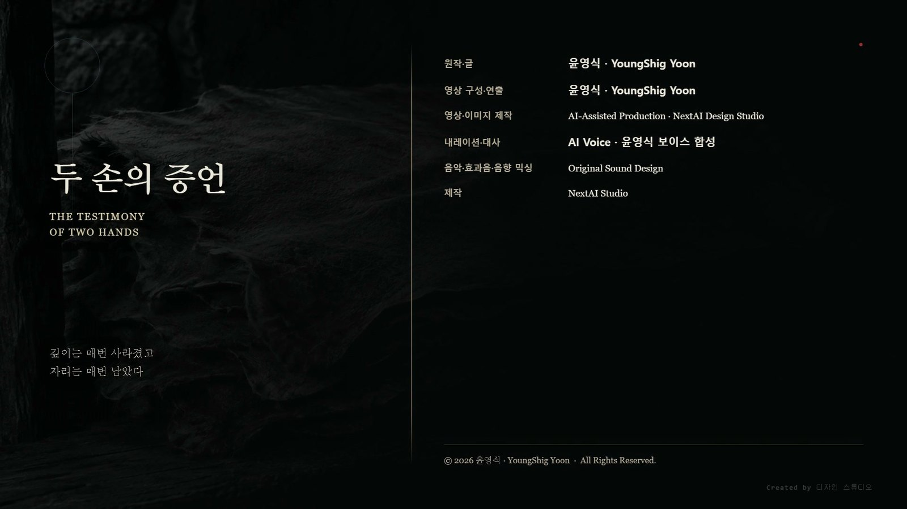

一. 하늘의 표
넉 달 동안 하늘에 원이 열렸다.
밤마다였다. 자정 무렵 궤도의 한 자리가 검게 파이고, 가장자리에 차가운 테가 생기고, 잠시 뒤 닫혔다. 오래 걸리지 않았다. 세는 사람에 따라 열둘까지, 스물까지였다.
아무 일도 일어나지 않았다.
넉 달째가 되자 그것이 가장 무서운 일이 되었다.
라스는 그것이 무엇인지 알았다. 르네는 지구의 기준을 다시 세우고 있었다. 지난가을 아이 하나 때문에 지구 전역의 정렬값이 한 번 무너졌고, 무너진 기준으로는 두 번째 작전을 시작할 수 없다. 그래서 매일 밤 조금씩 재고 있었다.
측정이 끝나면 온다.
그는 그 말을 아무에게도 하지 않았다.
말하면 마을이 견디지 못할 것이라고 판단했다. 넉 달을 견디는 것과 넉 달 뒤에 무엇이 오는지 알면서 넉 달을 견디는 것은 다르다.
나중에 그 침묵이 그에게 불리해진다.
二. 베낀 벽
지하로 내려가는 길은 넉 달 만에 넓어졌다.
처음에는 라스가 지나간 자국뿐이었다. 그다음에는 발자국이 늘었고, 통로 벽에 사람 손이 닿은 자리가 생겼고, 입구에 물통과 신발이 쌓였다.
아라와 라스는 막지 않았다. 막을 방법도 없었고, 막으면 그것이 다시 이야깃거리가 된다는 것도 알았다. 두 사람의 눈은 넉 달 동안 하늘에 가 있었다.
하람이 벽을 옮기기 시작했다.
마을에서 기록을 맡던 사람이었다. 처음에는 그을음을 개어 천에 묻히고 벽에 대고 문질렀다. 선이 떴다. 그런데 문지른 자리마다 농도가 달라 같은 선이 두 번 다르게 나왔다.
그다음에 무두질한 가죽을 물에 불려 벽에 붙였다. 마르면서 가죽이 홈의 모양대로 굳었다. 걷어 내면 벽에 있던 것이 손에 들렸다.
이 방법은 언제나 같은 것을 냈다.
넉 달 동안 그는 벽의 절반을 옮겼다.
옮긴 것들을 이어 붙이면 벽이 되었다. 선의 위치가 같고 간격이 같고 교차하는 자리가 같았다.
다만 깊이가 없었다.
르네의 규격선은 깊이가 값이다. 얕게 새긴 선과 깊게 새긴 선은 다른 것을 뜻한다. 굳은 가죽에는 홈이 있던 자리가 남지 그 홈이 얼마나 깊었는지는 남지 않는다. 얕은 홈도 깊은 홈도 가죽 두께 안에서 같은 굴곡이 된다.
하람은 그 사실을 몰랐다. 알 방법이 없었다. 벽 어디에도 깊이를 읽으라고 적혀 있지 않았다.
그가 손에 든 것은 벽이 아니었다.
벽에서 절반을 덜어 낸 것이었다.
三. 펼친 것
벽은 둥글었다.
세 겹 구조물의 바깥 정렬층은 원통이다. 라스가 지난가을 축을 따라간 것은 벽을 반 바퀴 도는 일이었다.
하람은 굳은 가죽 스물여섯 장을 마당에 펼쳤다.
곡면에서 뜬 것을 평면에 눕히면 가장자리가 남는다. 하람은 남는 자리를 잘라 이어 붙였다. 성실한 작업이었고, 그렇게 하지 않으면 이어지지 않았다.
이어 붙인 순간, 벽을 돌던 선이 직선이 되었다.
축이 방향을 갖게 되었다.
하람은 그 선을 손가락으로 따라갔다. 지난가을 라스가 지하에서 한 것과 같은 동작이었다. 다만 라스는 둥근 벽을 따라갔고 하람은 평평한 바닥을 따라갔다.
선이 마당을 가로질러 북쪽으로 나갔다.
북쪽 능선 위에 치우 생존자들의 자리가 있었다. 다듬지 않은 돌 두 개가 놓인 곳이었다.
하람은 오래 서 있었다.
그는 지상의 르네 저장고 여섯 채도 옮겨 두었다. 라스가 열일곱 해 전에 세운 것들이었다. 저장고의 규격선과 지하 벽의 규격선은 교차점 처리가 같았다. 한 선을 끊고 다른 선을 지나가게 하고, 끊는 쪽을 아래로 둔다.
같은 손이었다.
그날 저녁 마을에 문장 하나가 돌았다.
저들이 우리를 향해 새겨 놓았다.
사흘 만에 아래 마을 전체로 갔다. 문장은 옮겨지면서 짧아졌고, 짧아지면서 하늘의 원과 붙었다.
닷새째에는 이렇게 되어 있었다.
저들이 하늘을 부른다.
이레째에는 이렇게 되어 있었다.
저들이 우리를 지운다.
아무도 지어내지 않았다. 벽이 능선을 가리켰고, 능선에 치우가 있었고, 하늘에는 넉 달째 밤마다 원이 열렸다. 세 가지가 하나로 읽혔다.
세 가지 다 사실이었다.
四. 증인
여드레째에 사람들이 윤서를 찾아왔다.
아이가 벽에서 무언가를 들었다는 이야기가 남아 있었다. 열두 살이 지하에서 죽은 사람들의 말을 들었다는 이야기였다.
하람: "아이가 들은 걸 말하면 돼."
윤서: "뭘요."
하람: "저들이 뭐라고 새겼는지."
윤서: "그건 내가 들은 게 아니에요."
하람: "그럼 뭘 들었는데."
윤서는 대답하지 못했다.
수만 개였다고 말하면 하람은 그중 하나를 고를 것이다. 고른 하나가 다시 문장이 될 것이다. 아이는 그것을 설명할 말을 갖고 있지 않았지만 그렇게 되리라는 것은 알았다.
지난가을 아이가 옮긴 스무 마디 중에 서로 반대되는 말이 세 쌍 있었다. 기다리라는 말과 기다리지 말라는 말. 지금 뛰면 된다는 말과 뛰지 말라는 말. 아직 늦지 않았다는 말과 늦었다는 말.
그중 하나만 말하면 나머지 하나는 없었던 것이 된다.
하람: "말하기 싫은 건가."
윤서: "고를 수가 없어요."
하람: "고르라는 게 아니야. 들은 대로 말하라는 거지."
윤서: "들은 대로 말하면 스무 개예요."
하람: "그럼 스무 개 다 말해."
윤서는 첫 마디를 시작했다.
윤서: "물이 차오르니까 위층으로 가라고."
하람이 손을 들어 멈췄다.
하람: "그건 됐고. 우리 얘기가 있는 걸 말해."
아이는 입을 다물었다.
동생이 문 앞에 서서 비키지 않았다. 예닐곱 살이었고 어른 스무 명을 막을 수 없었다. 다만 언니가 지난가을에 사흘 동안 잠을 못 잤다는 것을 알았고, 그 사흘이 지하에 다녀온 다음이었다는 것도 알았다.
사람들은 그날 아이를 데려가지 않았다. 다만 다시 오겠다고 했다.
五. 두 개의 거절
열흘째에 마당에 사람들이 모였다.
아라와 라스는 걸어 내려왔다. 굳은 가죽 스물여섯 장이 바닥에 깔려 있었다.
하람: "이게 당신들 것이오."
라스: "내가 세운 게 아니야."
하람: "세웠냐고 안 물었소. 당신 손이 만든 방식이냐고 물었소."
라스는 부정하지 않았다.
하람: "도면을 내놓으시오. 무슨 뜻인지 우리가 직접 읽겠소."
그리고 아라를 보았다.
하람: "당신은 기억을 열어 주시오."
요구는 정당했다. 숨긴 것이 없다면 두 가지를 내놓으면 되는 일이었다. 도면과 기억. 그러면 이레 동안 돈 문장이 참인지 거짓인지 그 자리에서 판가름 났다.
아라는 마당을 둘러보았다. 여기 모인 사람들 중 절반은 지난겨울에 물을 나눠 준 사람들이었다. 넉 달 전 산이 잘리던 밤에 함께 남쪽으로 뛴 사람들이었다.
아라: "그 기억은 내 것이 아니야."
하람: "당신 안에 있는 거요."
아라: "있는 거랑 내 것인 건 달라."
아라 안에 있는 것은 말데크에서 죽은 사람들의 마지막 감각이었다. 물에 갇힌 사람의 수심 계산, 아이를 미는 손의 방향, 이미 늦었다는 것을 알면서 늦지 않았다고 정한 판단.
아라: "열면 너희가 이 중에 하나를 고를 거야. 그게 저 벽이 한 일이야."
하람: "우리는 그런 짓 안 하오."
아라: "저 벽을 새긴 자들도 그렇게 생각했어."
라스는 그동안 가죽을 보고 있었다.
옮긴 솜씨가 좋았다. 위치가 정확했고 간격이 흐트러지지 않았다. 넉 달 동안 이 사람은 아주 성실하게 절반을 잃어버렸다.
라스: "도면은 못 줘."
하람: "숨길 게 있다는 뜻이오?"
라스: "너희가 그걸로 무엇을 만들지 내가 아니까."
하람: "우리는 아무것도 안 만들 거요. 읽기만 할 거요."
라스: "읽는 법을 배우면 새기는 법도 배워."
라스는 그 말을 하면서 자기가 무슨 말을 하는지 알았다.
열아홉에 그는 새기는 법을 정했다. 아무것도 만들 생각이 없었다. 관문을 위한 것이었다.
아라가 그를 보았다. 두 사람만 아는 것이 하나 있었다. 저 벽이 누구의 문법으로 새겨졌는지, 그리고 그 사실이 마당에서 밝혀지면 무엇이 되는지.
라스는 말하지 않았다. 말하면 마당의 사람들은 그를 벽의 주인으로 볼 것이다. 벽의 주인이 도면을 안 주는 것과, 벽과 무관한 자가 도면을 안 주는 것은 다르게 읽힌다.
말하지 않는 편이 자기에게 유리했다.
그는 그 사실도 알고 있었다.
마당에서 누군가 하늘을 물었다. 밤마다 열리는 원이 무엇이냐고. 저것도 모르느냐고.
라스는 그것도 대답하지 않았다.
두 사람의 거절은 마당을 설득하지 못했다. 숨길 것이 없으면 내놓으면 된다. 그것이 그 자리에 있던 사람들 대부분의 생각이었고, 틀린 생각도 아니었다.
六. 정렬핵
열이틀째 밤에 사람들이 지하로 내려갔다.
하람이 앞에 섰고 스물두 명이 뒤를 따랐다. 횃불을 여러 개 들었다.
윤서가 그중에 있었다.
아이는 따라가겠다고 하지 않았다. 사람들이 데려갔다. 벽이 무엇을 하는지 아이가 안다고 믿었기 때문이다.
라스가 뒤에서 내려왔다.
세 겹 구조물의 안쪽에 정렬핵이 있었다. 도착층 중앙의 낮은 원통이었다.
하람은 그것이 무기라고 생각했다. 축이 능선을 향해 있으니 축을 따라 무언가가 나갈 것이라고 생각했다. 먼저 쓰면 된다고 생각했다.
정렬핵은 무기가 아니었다.
세 겹 구조물의 하중을 잡는 장치였다. 바깥 정렬층이 방향을 고정하고 중간 하중층이 무게를 받고 안쪽 도착층은 비어 있다. 도착층이 비어 있다는 것이 이 구조의 계산 조건이다. 그 안에 질량이 있으면 하중 계산은 조건을 잃는다.
지금 도착층에는 스물세 명이 서 있었다. 라스가 통로에서 들어서면 스물넷이 된다.
작동시키면 구조물이 기준을 다시 잡는다. 잡을 수 없는 기준을 잡으려 하면 구조는 자기를 조인다. 천장이 내려온다.
하람은 원통의 덮개를 여는 데 한참이 걸렸다. 르네의 잠금은 힘이 아니라 순서로 여는 것이었고 그는 순서를 몰랐다. 결국 옆면 이음매를 끌로 벌렸다.
이음매가 벌어지는 소리가 났을 때 라스는 이 자리에 있는 전부가 곧 죽는다는 것을 알았다.
설명하면 된다.
이건 무기가 아니고 하중 장치이고 여기서 작동시키면 천장이 내려온다고 말하면 된다.
말하면 믿지 않을 것이다. 믿지 않아서가 아니라, 그 말이 지금 이 자리에서 무엇으로 들릴지가 정해져 있기 때문이다. 무기가 아니라고 말하는 자는 무기를 지키려는 자다.
라스는 아무 말도 하지 않았다.
하람이 손잡이를 잡았다.
정렬핵의 축은 원통 안쪽에 있었다. 값을 넣으려면 벌어진 이음매로 손을 넣어야 했고, 손을 넣으면 하중이 걸리는 자리에 손이 들어간다.
라스는 왼손을 넣었다.
손끝이 축을 찾았다. 지난가을 벽을 읽던 것과 같은 동작이었다. 그때는 값이 들어왔고 이번에는 값이 나갔다.
0.4도.
지난가을 그가 벽에서 읽은 값이었다. 열일곱 해 전 그가 말데크에서 입력한 값이었다.
정렬핵이 돌았다.
말데크의 관통기는 값이 어긋나도 발사됐다. 공격 장치는 오차를 감수하고 나간다. 정렬핵은 반대다. 구조를 지키는 장치이므로 기준이 맞지 않으면 작동하지 않는 것이 설계다.
원통이 한 번 울리고 멈췄다.
같은 순간 이음매가 닫혔다.
라스는 소리를 내지 않았다. 손을 빼는 데 시간이 걸렸다.
하람: "고장 났군."
라스: "그런 것 같군."
하람은 원통을 두 번 더 만졌다. 손잡이를 당겼다 놓았다. 아무것도 돌지 않았다.
그는 실망한 얼굴이었다.
라스는 그 얼굴을 오래 보았다. 이 사람은 오늘 밤 죽지 않았다는 것을 모른다. 앞으로도 모를 것이다. 넉 달 동안 성실하게 벽의 절반을 잃어버린 것도, 마을 스물두 명을 데리고 천장 아래에 서 있었다는 것도 모른다.
모르는 편이 나았다.
사람들이 올라갔다. 올라가면서 누군가 말했다. 저들이 미리 망가뜨려 놓은 것이라고. 여럿이 고개를 끄덕였다.
윤서는 올라가지 않고 서 있었다.
아이는 어두워서 아무것도 보지 못했다. 다만 라스가 손을 넣는 동안 그 자리에서 무엇이 지나갔는지 느꼈다. 넉 달 전 벽 앞에서 느낀 것과 같은 종류였다.
아이만 알았다.
七. 남은 자국
열사흘째 아침에도 하늘의 원은 열렸다.
낮이었는데 열렸다. 넉 달 만에 처음이었다. 마을 전체가 그것을 보았다.
측정이 끝나 간다는 뜻이었다. 라스는 그것도 말하지 않았다.
아라가 마당으로 갔다. 가죽 위로 올라가지 않고 가장자리에 서서 한 마디만 했다.
아라: "너희가 무서워하는 건 우리가 아니야."
하람: "그럼 뭐요."
아라: "넉 달 전 산이 잘리던 밤에, 너희 중 아무도 어디로 뛰어야 하는지 몰랐다는 거."
하람은 대답하지 않았다.
그는 가죽을 걷지 않았다. 마당에 그대로 두었다. 사람들도 흩어지지 않았다. 그날 저녁에도 문장은 돌았고, 다음 날에도 돌았다.
공포는 가라앉지 않았다.
가라앉을 이유가 없었다. 하늘은 여전히 열렸고, 두 사람은 여전히 아무것도 내놓지 않았다.
윤서는 마당에 나왔다.
아이는 말할 수 있었다.
어젯밤 지하에서 라스가 무엇을 했는지 말하면 된다. 그 자리에 있던 사람이 스물넷인데 그중 한 사람만 그것을 안다. 말하면 두 종족은 마을을 살린 쪽이 되고, 이레 동안 돈 문장은 그 자리에서 무너진다.
아이는 마당 가장자리에 서서 사람들을 보았다.
말하면 아이는 증인이 된다.
한 번 증인이 되면 다음에도 증인이 된다. 다음에 물을 것은 지하에서 들은 스무 마디일 테고, 그때도 하람은 손을 들어 멈출 것이다. 그건 됐고, 우리 얘기가 있는 걸 말해.
윤서는 아라를 보았다. 아라는 아이를 보지 않았다. 아이가 무엇을 저울질하는지 알면서 보지 않았다.
라스는 마당에 없었다. 왼손을 쓰지 못했고, 그 손을 사람들에게 보이면 어젯밤에 무엇을 했는지 묻게 된다.
아이는 돌아섰다.
집에 와서 나무껍질을 꺼냈다. 지난가을에 손톱으로 두 번 누른 것이었다. 하나 긋고, 조금 방향을 틀어 하나 더.
한참을 보다가 다시 접어 품에 넣었다.
보이면 누군가 그것도 옮길 것이고, 옮기면 두 자국 사이의 각도가 사라진다. 굳은 가죽에는 자리가 남지 깊이가 남지 않는다.
그해에 마을은 두 종족을 몰아내지 못했고 두 종족은 마을을 설득하지 못했다.
하람의 가죽은 마을 기록실에 들어갔다. 언젠가 깊이를 옮길 방법을 찾으면 다시 꺼내겠다고 적어 두었다.
그 방법은 끝내 찾지 못했다.
기록실의 가죽은 오래 남았다. 마을이 옮겨 갈 때 함께 갔고, 다음 세대가 종이라고 부르는 것으로 바꿔 옮겼고, 그다음 세대가 또 옮겼다.
옮길 때마다 눌러서 떴다.
깊이는 매번 사라졌고 자리는 매번 남았다.
